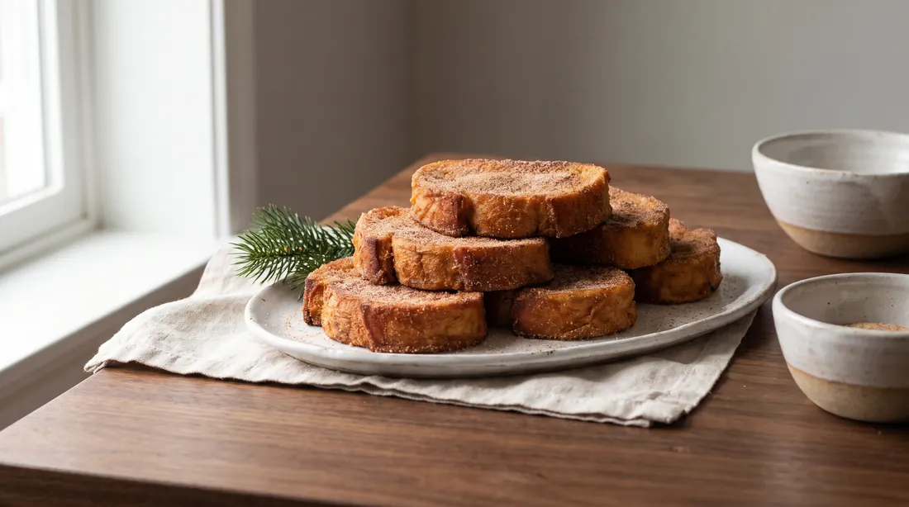
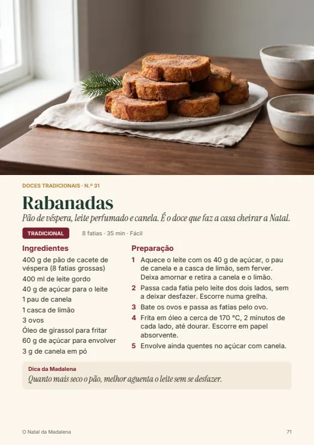
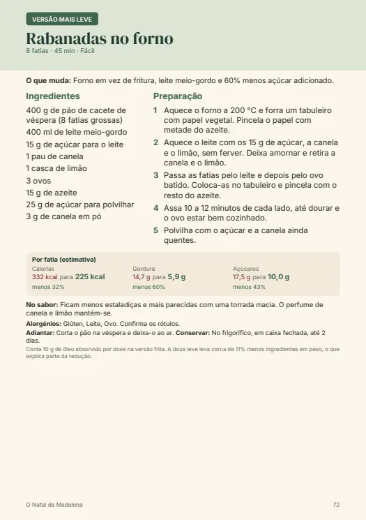
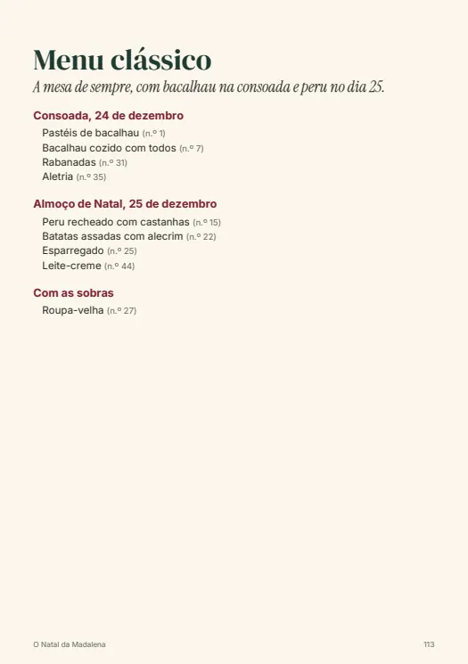
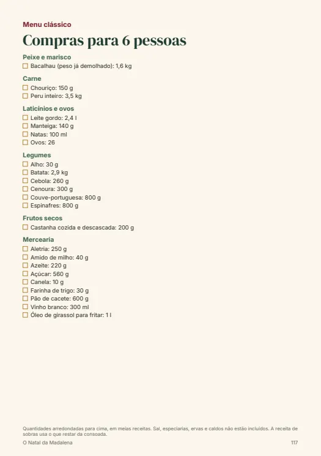
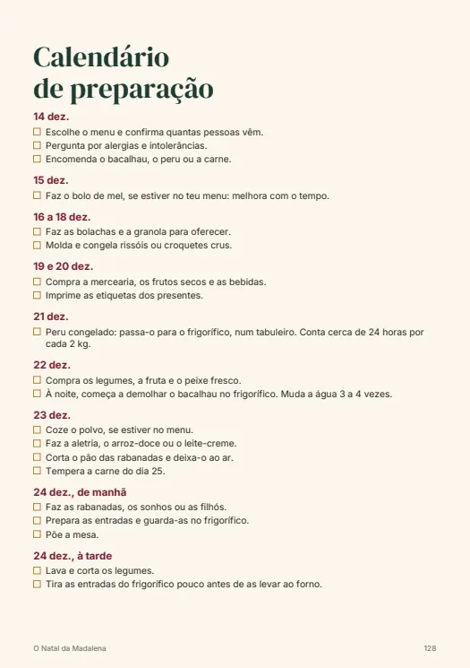

Livro digital de Natal · Chef Madalena
O Natal de sempre, com uma versão mais leve de cada receita.
50 receitas da mesa portuguesa, da consoada aos doces, com menus, listas de compras e um calendário para chegares ao dia 24 sem correrias.
Pagamento único. PDF para telemóvel, tablet ou impressão.

Tu escolhes como fazer.
Cada receita traz a versão de sempre e uma mais leve, com o que muda e como fica no sabor. Vê o exemplo das rabanadas.
Fritas em óleo, passadas por leite gordo e envolvidas em açúcar e canela.
- Calorias
- 332 kcal
- Gordura
- 14,7 g
- Açúcares
- 17,5 g
Estimativa por fatia, calculada a partir dos ingredientes, com 10 g de óleo absorvido por fatia na versão frita. A versão mais leve leva cerca de 11% menos ingredientes em peso.
As 50 receitas
Toca num prato para veres o que muda na versão mais leve.
O que vem no livro
- 50 receitas, cada uma em duas versõesEntradas, consoada, dia de Natal, acompanhamentos, sobras, doces, presentes e bebidas.
- 3 menus completosClássico, mais leve e económico, para a consoada e o almoço de dia 25.
- 12 listas de comprasUma por menu, para 4, 6, 8 ou 12 pessoas.
- Calendário de preparaçãoO que fazer de 14 a 24 de dezembro, incluindo quando demolhar o bacalhau.
- Guia de substituiçõesAçúcar, fritura, natas, manteiga, farinha, lactose e glúten.
- Etiquetas para imprimirPara os presentes comestíveis, com espaço para os alergénios.





Quem é a Madalena?
A Chef Madalena Ferreira é uma personagem fictícia criada com inteligência artificial. As fotografias do livro também são geradas com IA, e as receitas foram escritas com apoio de IA.
Preferimos dizê-lo aqui, antes de comprares. O livro foi pensado para quem cozinha o Natal da família e quer manter a tradição, com alternativas para quem pede menos açúcar, menos fritos ou refeições mais leves.
O teu pedido
IVA incluído
Comprar o livroGarantia de 7 dias
Perguntas frequentes
Como recebo o livro?
Depois do pagamento recebes um link para descarregar o PDF. Se pagares por referência Multibanco, o link chega quando o pagamento for confirmado, o que pode demorar.
Consigo usar no telemóvel?
Sim. É um PDF com letra pensada para ler no telemóvel, e também podes imprimir em A5.
As receitas foram testadas?
Ainda não foram todas testadas em cozinha. Usa os tempos e as quantidades como base e ajusta ao teu forno e aos teus tachos.
Todas as versões leves têm menos açúcar?
Não. Todas têm menos calorias do que a versão tradicional, mas em algumas os açúcares sobem por levarem mais legumes ou fruta, como as trufas de tâmara. Cada receita mostra a comparação.
Serve para quem tem diabetes ou segue uma dieta?
Este livro não é um plano alimentar nem um conselho de saúde. Se tens uma condição de saúde ou uma dieta prescrita, segue a orientação do teu médico ou nutricionista.
Indica os alergénios?
Sim, em cada receita. Confirma sempre os rótulos dos produtos e pergunta aos convidados por alergias.
E se não gostar?
Tens 7 dias para pedir o reembolso por mensagem no Instagram @madalena.chef.